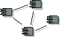

Artifact
Overview:
Process Model

Click here to see CRS Artifact:
Process Model |
We have produced a Process Model in the Logical
View of the Rational® Rose™ model
file using stereotyped classes for processes & threads. You
must have Rose installed to view this model file note.
You may view a generated report (see Reports section
below). |
| Tool: |
Rational® Rose™ |
| Template: |
Wylie College
has it's own customized RUP
framework for Rational Rose model files,
follow this
link to inspect the framework. |
| Specialization: |
None |
|
Related artifacts:
|
|
Reports: from Rational
Rose Web Publisher Add in
|
Some of the elements in the Rational Rose model file is linked to documents
outside the model. For these links to work, you must set up a virtual path
symbol to point to the home directory of the model file. Follow these steps :
- Open Rational Rose, Select File / Edit Path Map
- In the 'Symbol' field, type 'CRS_HOME' (all upper case)
- In the 'Actual Path' field, type '&' (sets all linked files to be
addressed relative to home directory of the model file).
- Click Add and Close
- Open the Course Registration System model file
|